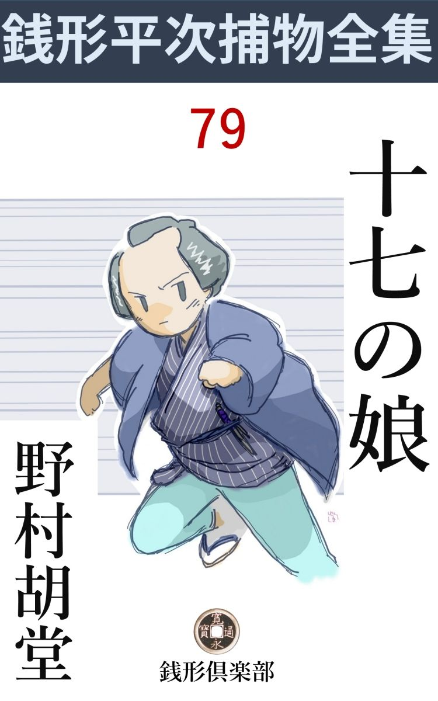
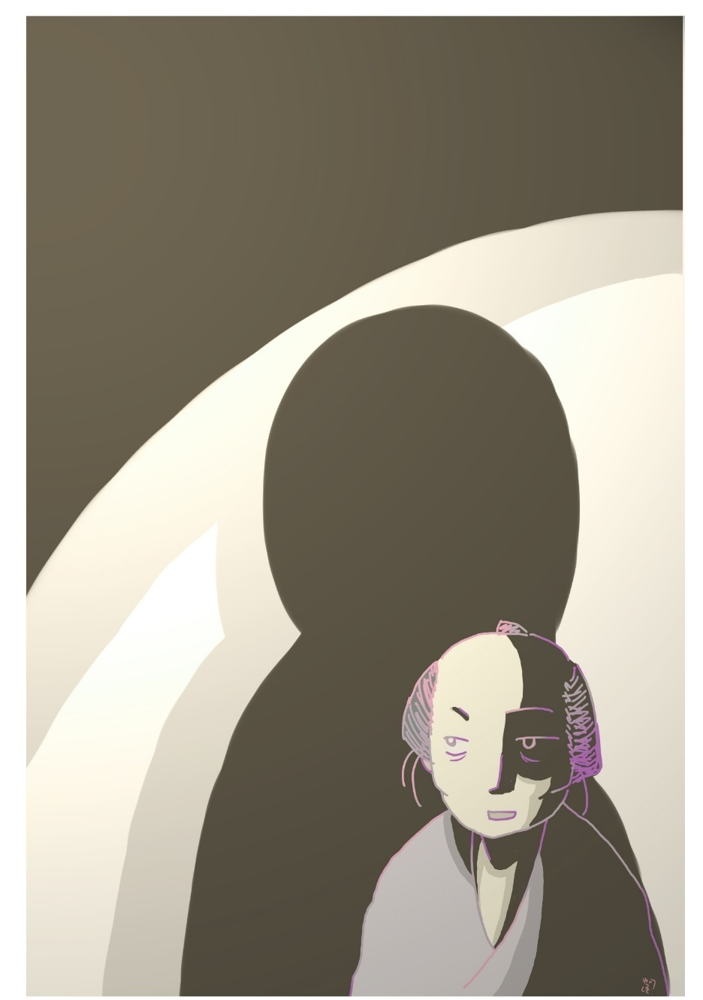

| 十七の娘: 銭形平次捕物全集第79話 (銭形倶楽部) | |
| 野村胡堂 | |
| ZENIGATA CLUB (2018) | |

一
荒物屋のお今------今年十七になる滅法 可愛らしいのが、祭り衣裳の晴れやかな姿で、湯島一丁目の路地の奥に殺されて居りました。
「まア、可哀想に」
「あんな人 好 きのする娘 をねエ」
ドッと溢 れる路地の弥次馬を、ガラッ八の八五郎、どんなに骨を折って追い散らしたことでしょう。
「えッ、寄るな寄るな、見世物じゃねえ」
遠い街の灯や、九月十四日の宵月に照されて、眼に沁むような娘の死体を、後ろに庇ったなりで八五郎は呶 鳴 り立てるのでした。そこここから覗く冒 瀆 的 な弥次馬の眼が、どうにも我慢がなりません。
「どうしたえ、八、お今がやられたそうじゃないか」
幸い親分の銭形平次が飛んで来ました。江戸開府以来と言われた、捕物の名人が来さえすれば、八五郎の憂欝は一ぺんに吹き飛ばされます。
「親分、あれだ」
「なんて虐 たらしい事をしやがったんだろう、可哀想に」
側に寄って見ると、路地をひたした血潮の上に、左頸筋 を深々と切られたお今は突っ伏しておりますが、触って見るとわずかに体温が残るだけ。
八五郎と死骸を挾んで、番太の親爺と、お義理だけの町役人が顔を並べましたが、すっかり顫え上がってものの役にも立たず。
「肝心 のお袋は目を廻して、そこの家へ担ぎ込まれましたよ」
親一人子一人の評判娘が、この虐たらしい最期を遂げては、母親が目を廻すのも無理のないことでしょう。
「可哀そうに------検屍 が済んだら、早く引取らせるがよい。もうすぐ八丁堀の旦那方が見える筈だから」
平次はそう言って、路地の外から覗く、物好きな眼の前へ、蓋 になるように立っております。
「三輪 の親分が、下手人を挙げて行きましたぜ、親分」
と、ガラッ八の声は少し尖 りました。
「そいつは早手廻しだな、誰だい、その縛られたのは？」
「町内の油虫 ------釣鐘 の勘六が、血だらけの匕首 を持って、ぼんやり立っているところを、多勢の人に見られてしまったんで」
「成程ね」
「あわてて逃出したところを、三輪の万七親分が通りかかって、いきなり縛ってしまいましたよ」
「それっ切りかえ」
「あっし も見たわけじゃありませんが、縛られると、それまで呆 然 していた勘六が、急に気狂いのように騒ぎ出したそうですよ」
「はてな？」
平次は考え込みました。勘六は五十男で、評判のよくない人間には相違ありませんが、十七娘をどうしようという歳ではなく、それに、お今は母一人娘一人で、人に怨 まれる筋合などは、どう考えてもなかったのです。
「変でしょう、親分、------勘六ほどの悪党が、人を殺した現場に、ノッソリ血だらけな匕 首 を持って立っている筈はないじゃありませんか」
ガラッ八にもこれ位の眼があったのでした。
「三輪の兄哥にも何か思惑 があるんだろう。ところで、お今には浮いた噂はなかったのか」
「大根畑の植木屋の専 次 というのが心安くしていたそうですよ」
「そっとつれて来る工夫はないか」
「そこに居ますよ、お今のお袋と一緒に」
ガラッ八は死骸を跨 ぐように、突き当りの長屋へ入って行きました。そこはお今母子の知合の家で、神田明神様の宵宮の賑いを抜けて、知合の家へやって来たお今が、後を跟 けて来た曲者に、この路地の奥でやられたのでしょう。
「あっし が専次でございますが------親分さん」
八五郎につれられて来たのは、二十二三の小意気な男でした。長ものを着て居るせいか、植木屋という八五郎の触れ込みがなかったら、平次も大 店 の番頭か何かと間違えたことでしょう。
「専次------というのかい、このお今とはどうして知合になったんだ」
平次はお今の死骸を月明りの中に指しました。それを眺める専次の表情を、一つも見落すまいとするように。
「この暮には祝言をすることになって居ましたよ、親分さん」
専次の顔には悲痛な色が動きました。一生懸命、反 ける眼が、ツイお今の虐 たらしい死骸に牽 付けられる様子です。
「お袋も承知か」
「それはもう------何だったら、本人に訊いて下さい、そこに居りますから」
二
「当人は？」
平次は重ねて訊ねました。
「当人もそのつもりでした、------この春から」
専次の返事のギコチなさ、------それは、喉 まで込み上げて来る、大きな悲しみのせいでもあるでしょう。
「ところで、今晩、一刻 ばかり前から、どこに居たんだ」
「明神様の境内から、金沢町あたりを歩いて居りました。何しろこんなに賑やかですから」
「お今と一緒に歩いているのを、見たものがあるぜ」
「そんな、そんな事が------親分」
専次はすっかりヘドモドして居ります。いや、それより驚いたのは、ガラッ八の八五郎でした。銭形平次は、八五郎のやった迎いで、ツイ今しがた自分の家から来たばかりで、そんな噂などを耳に入れる隙 があろうとは思われません。
「この一刻ばかり、何処に何をして居たか、それがはっきりしなきゃ帰せねえが」
「親分、そりゃ無理ですよ、こんな人出ですもの、何百人に逢ったか判らないが、そのうちから、あっし の見知りの人を捜すなんて、出来ない相談ですよ」
専次は泣き出しそうでした。全く神田明神をめぐって人間の洪 水 のようなもので、その中を一刻泳ぎ廻ったところで、誰も見知り人などがある筈もありません。
「気の毒だが、その胸の血 飛 沫 がモノを言うから、一刻ばかりここへ寄り付かないという、確かな証人がなきゃ------」
「これは親分」
専次は自分の胸のあたりを眺めました。なるほど目立つほどではありませんが、点々として左脇腹へかけて、飛 沫 いた血の跡は隠しようも無かったのです。
「死骸を抱き起した時の血だって言うんだろう」
「その通りですよ、親分さん」
「死骸から附いた血なら、そんなに飛沫く筈はねえ」
「でも、お今はその時、まだ息があったんで」
「息のあるのを介抱もせずに、俯向 に投り出したというのかい」
平次の問いは容赦もありません。月にさらされた惨憺 たる有様を遠くながめて、路地の外の弥次馬も声を呑みました。
「人を呼んで来るつもりで、大急ぎで飛出しましたよ」
専次は出来るだけ軽やかに応答するつもりでしょう。頬のあたりに引釣ったような笑いさえ浮べますが、喉はすっかり涸 れて、こういう言葉も容易には出て来ません。
「その後に勘六が来て、匕首 を拾い上げて捕まったというのだな」
平次は誰へともなくそう言います。
「へエ、そ、その通りで」
「それほど判っているなら、勘六が縛られる時、なんだって一言弁解をしてやらなかったんだ」
「へエ------」
「それじゃ勘六にすむめえ」
「でも、親分さん、勘六はあっし が見付ける前に、お今を殺して、又やって来たかも知れません」
「自分の殺した娘の死骸を見に来た奴が匕首を拾い上げたというのか」
「------」
「そんな馬鹿なことがあるわけはねえ」
「------」
専次はガタガタ胴 顫 いのするのをどう隠しようもありません。
「八、しょっ引いて行こうか」
平次は静かに八五郎を顧みました。
「親分」
ガラッ八はもういちど平次の顔色を見ましたが、決然たる様子を見ると、ツイ袂の中の捕縄に手が掛ります。
「御免下さい、親分さん、------少しばかり申上げたいことがございますが」
「誰だい」
「文吉でございます、へエ」
駄菓子屋の文吉------貧乏人には相違ありませんが、町内では便利の良い五十男でした。
「何だい」
「あの、専次さんは、つい先刻まで、町内の御 神 酒 所 の外にある縁台に、腰を掛けて居たようですが------ね、専次さん」
「へ、へエ------」
「町内の衆と顔 馴染 がないので、誰も気が付かなかったかも知れませんが、あっし はよく知っております。声を掛けようと思いましたが、遠慮して暗い方に腰を掛けて休んでいるのを、わざわざ明るみへ出して、若い者に極りを悪がらせるでもあるまいと、ツイ黙ってしまいました、へエ」
文吉の話は恐ろしく筋が通ります。
「それは本当かい、専次」
平次もツイ、そう訊かなければなりませんでした。
「へエ------、ブラブラお祭の人出を見て歩いているうちに、足が草 臥 れてやりきれませんが、大根畑のあっし は、入って休むような家もございません、で」
専次はゴクリと固唾 を呑みます。救われた喜びに、少しポーッとした様子です。
「専次さんが立上がった時、あっし も用事を思い出して、後から一緒に立ちました。ここの路地まで来ると、専次さんは路地の中へ入った様子でしたが、間もなく真っ蒼になって飛んで出て、その後へすぐ勘六さんが入った様子です。お今さんを殺す隙なんかありゃしません」
「------」
銭形平次もすっかり考え込んでしまいました。どんな証拠があるにしても、こんな確かな生証人 が出て来ては、どうすることも出来ません。
三
「た、大変ッ、親分」
翌る九月十五日の晩、ガラッ八は疾風 の如く飛び込んで来たのです。
「何が大変なんだ、少し落着いて物を言え、お神楽 堂 から飛出した潮吹 見たいな風じゃないか」
平次は静かに煙草盆を引寄せました。
「落着いちゃいられませんよ、又やられたんだ」
「何だと？」
「三河屋のお三輪が、踊屋台 の中で------」
「行って見よう」
平次は立上がると、寸刻の猶 予 もなく、湯島一丁目まで飛んで行きました。
踊屋台は、界隈第一番という分限者、大藩のお金御用達を勤める三河屋の横手、久しいあいだ空地になって居るところへ引込んだまま、夜も亥刻 近くなると提灯を二つ三つ点け放して、あまり人も寄り付かなかったのです。
その踊屋台の中、揚幕の蔭に、三河屋の一粒種で、町内の自慢の一つになっているお三輪が、揃いの祭手拭で、痛々しくも縊 り殺されていたのです。
この娘も、前の晩殺された荒物屋のお今と同じ十七、身上 に隔たりはありますが、負けず劣 らず美しい娘でした。
三河屋の両親の嘆きは見ている方も気が狂わしくなる位。
「お三輪、お三輪」
「何だって、死んでくれた」
「誰がこんな目に逢わせたんだ」
「言っておくれよ、お三輪」
半狂乱の両親は、検屍 も調べも待たず、四本の手に抱き上げて、よろぼいよろぼい庭を隔てた自分の家へ担ぎ込んで行ったのです。
五十過ぎて、たった一と粒種------それも龍宮の乙 姫 様 のように美しい娘に死なれた、三河屋嘉兵衛夫婦の嘆きは、見る目も哀れでした。
「お今も、お三輪も十七か、変なことだな、八」
平次はそんな事を言いながら、右往左往する弥次馬を尻目に空地と三河屋と、踊屋台の位置と、光線の関係などを見きわめております。
「いやな流行 りものにならなきゃ宜いが------」
ガラッ八は何心なくそんな事を言って、気がさしたものか四方を眺めました。幸い誰も聴いている者はありません。
「表は人通りが多いから、踊屋台へ忍び込むには、後ろの木戸からだろう。道は二つしかないな、一方は三河屋の裏へ出るのか」
「離室 の前から、母屋 へ出られますよ」
「離室には誰がいるんだ」
「七平と言って、------足の悪い男で、何でも、三河屋の遠縁の者だとか言いましたが」
地獄耳のガラッ八は、この辺の消息なら何でも知って居ります。
「もう一つの道は？」
と平次。
「若い者の休み場の裏へ出ますよ、駄菓子屋の文吉の家を若い衆の足 溜 りにしたんで」
「行って見ようか、------お前は三河屋へ行って、お三輪が何だってあんなところへ行ったか聴いてくれ」
平次は生 垣 と板塀の間を通って、念入りに調べながら、駄菓子屋の裏へヌッと出ました。そこには町内の顔役やら、若い者が十五六人、亭主の文吉を囲んで、その晩の恐怖をヒソヒソ語り合って居ります。
休み場と言っても、ほんの形ばかり、店には屏風 を張り廻して、町内の世話人の足溜りにあてて、屏風の裏の一と間は文吉の寝間で、そのすぐ隣には小さいお勝手があると言った、まことに手軽な構えです。
「親分さん、御苦労様で------」
文吉は早くも平次の姿を見て挨拶しました。
「誰もここから空地の踊屋台の方へ行ったものはないだろうね」
「あるわけはございません。この人数で見張って居たんですから」
町内の鳶頭 は太鼓判でも何でも捺 しそうな勢いでした。
「親分」
ガラッ八は後ろから追っかけて来ました。
「何だ、八」
「三河屋へ行って聴いて来ましたが、お三輪は宵のうちに、あの踊屋台に舞扇 を忘れたんだそうで、それを取りに行ったそうですよ」
「扇なら下女か何かに取らせりゃいいじゃないか」
「それが自分で行ったというから不思議じゃありませんか。しばらく待っても帰らないから、心配になって、下女をやって見たんだそうで」
平次は腑 に落ちない顔をして黙っております。十七になる大家の娘が、扇を忘れた位のことで、亥 刻 過ぎの空地などへ一人で行く筈はないと思っている様子です。
「何もかも、亥刻 過ぎに起ったことだ、ほんの四半刻の間だね」
お今を殺したのも、お三輪を殺したのも、刃物と手拭の違いはありますが、ほんのしばらくの間に行われたことで、人間の注意と注意の間の、僅かばかりの盲点を利用したやり口です。
「ここからは誰も空地の方へ行かなかったのだな」
平次はまだその事を気にして居ります。
「誰も行ったものはありません。宵からここに居たのは顔ぶれは決って居りました。それに、あっし の寝て居る枕元を通らなきゃ、裏口から出られやしません」
「寝ていた？」
「へエ、面目次第もございませんが、少し呑み過ぎて苦しいので、屏風 の蔭へ横になって、半刻ばかり休まして貰いました」
「------」
「将棋 を指したり、無駄話をしたり、女達が私に水を持って来てくれたり、どうせこんな浅間な家ですから、寝付かれはしませんが、それでも、横になっただけで、酔もさめましたよ」
文吉はそう言ってよく禿げ上がった前額をツルリ撫で上げたのです。五十五六の世馴れた愛嬌者で、少し卑 屈 らしいところはありますが、その代り町内の旦那衆に可愛がられて、小僧を相手に一文商 いをしながら気楽に暮しております。
「寝込んでしまって、枕元を誰か通ったのを知らないような事はあるまいな」
「それはもう大丈夫で、へエ」
文吉は牡 丹 餅 判 が欲しそうな顔でした。
四
三河屋へ行って見ると、家の中は悲嘆の渦でした。老主人夫婦の他には、雇人 ばかりですが、その雇人達が、ただ一と粒種の三河屋の希望を喪 った悲しみに浸り切って、しばらく平次と八五郎に取り合う者もない有様です。
主人の嘉兵衛が、涙を納めて、平次を迎えるまでには、たっぷり四半刻もかかりました。祭りのどよみも静まり返ってさしもの賑いも、今日の一段落を告げましたが、三河屋の家の中ばかりは、まだ歔欹 の声が、何処からともなく響いて、人の心を滅入らせます。
「何か、心当りはないでしょうか、旦那」
苗字 帯刀 まで許されている嘉兵衛に対しては、岡っ引の平次も遠慮はありました。
「いや何にも、------扇を取りに踊屋台へ行ったというのも後で下女から聴いたことで」
一代身上を築いた嘉兵衛は意志の権化のような剛毅 な男ですが、今晩はすっかり愚 に返って、ともすれば湧く涙を拭うばかりです。
「手拭はお嬢さんの持物でしたね」
「その通りだよ、親分」
「申上げ憎いことですが、近頃お嬢さんが親しくしている男はなかったでしょうか」
「------」
嘉兵衛の首は、胸にめり込みます。
「そんな事でもあったら、そっと言って下さい、------お嬢さんの敵を取らなきゃなりません」
平次は注意深くこう切り出しました。
「言いましょう、親分、恥も外聞 も、娘が生きているうちの事だ、------実は、あの大根畑の植木屋の伜で、専次というのが------」
「------」
「ときどき娘を誘い出しに来たようだが、男っ振りは好いにしても、あんまり評判のよくない男だから婆さんにそう言って、固く逢うのを止めてあったんだが------」
嘉兵衛はいかにも言い憎そうです。
「よく言って下さいました。それが判ればまた何とか考え様もあるでしょう。ところで、奉公人や近所の衆、御親類の人達等で、旦那かお嬢さんを怨 んでいる者はありゃしませんか」
「それはない」
嘉兵衛の言うことはピタリとして居ります。
「でも------」
「奉公人は他所より給料を高くしてあるし、仕着せや手当も不自由はない筈だ。それに少しは慈悲善根の心がけ、寄附も、ほどこしも、人様より少い筈はない」
「------」
「町内で私から無利息 の金を借りている者は------斯 う------と、十人や十五人はあるだろう」
嘉兵衛の言うのは一々本当です。三河在から、万歳の太夫で江戸へ来たというのは、世間の悪口にしても、ともかくも、ここへ根をおろしてざっと三十年、今では万 両分 限 の一人として、江戸の長者番附の前頭何番目かに据えられる嘉兵衛ですが、慈悲善根の心がけが篤 く、町内で評判の良いことは、平次も悉 く知っております。
「とりわけ恩を着せているのは？」
と平次。
「私の口から言っては変だが------番頭にでも訊いて下さい」
平次もそれ以上は押して訊きません。
番頭手代、小僧下女の果まで一応は逢って見ましたが、何の取立てたこともありません。踊屋台へ行って、お三輪の死骸を見付けたという下女のお崎は、三十前後の達者な年増で、踊屋台の揚幕の蔭に、倒れていたお三輪の美しさ、いたましさ、そして凄さを、委曲 詳細 に喋舌 り捲りますが、それにも、何の得るところもなかったのです。
「離屋 へ行って見ましょうよ、親分」
「俺もそれを考えていたんだ」
三河屋の母屋から、踊屋台へ行くには、どうしても此処を通らなければならないのが、離室の住人にひどく重要な役割を持たせます。
「七平、------まだ起きているのかい」
ガラッ八は見知り越しらしく、親しい声をかけると、
「誰だい」
暫らくゴトゴトさして、雨戸をガラリと開けたのは、四十五六の蜘蛛 のような男です。
五
「俺だよ」
代って顔を出した平次。
「お、銭形の親分さん」
よく禿 げては居りますが、念入りに見ると、まだどこか若さの残った男。可哀想に足が不自由で、自分ひとりの力では、一寸 も外へ出られません。
「遅くなって済まなかったな------ちょいと訊いて置きたいことがあってね」
「どうぞ、親分さん、こんな時ですから、お役に立てば何でもやりますよ」
七平は縁側の端っこへ出て、月の射し入る中に小さく踞 まりました。怪奇な男ですが、それだけに物事に熱心そうで、平次の方が反 って引入れられます。
「殺された娘の敵が討ってやりたいが、お前、何んか知って居ることはなかったかい」
「可哀想に、------良い娘でしたが------時折は、淋しかろうって、菓子を持って来てくれたり、草 艸紙 を持って来て貸してくれたり」
七平はツイ眼をしばたたきます。小さい小さい離室で、恐ろしく簡素ですが、古物ながら一と通りの道具が揃って、何不自由なく暮している様子です。
「誰か、お三輪を怨んでいる者はなかったかい」
「怨んでいる者------飛んでもない、死ぬほど惚れている者は多勢ありますが」
「例えば？」
「町内の独り者は皆んなですよ、へエ」
「その中で、親しくしているのはあった筈だが」
「大根畑の専次とか言いましたね、あの生 っ白 いのが、裏から来て、私の見る前で呼出しの合図なんかしていましたよ。どうせ私は片 輪 者 だから、情 事 とは縁のない世界に住んでいると思ったのでしょう。私などは道傍の地蔵様ほどにも思っちゃ居ませんでした」
七平のはげしい調子には、片輪者らしいひがみがあるのを、平次は聞きのがしません。
「今晩は？」
「あっしは早寝で、戌刻 半には床の中へ潜 り込んだ位ですから、うとうとして居て、よくは知りませんが、お祭の笛だか、口笛だか、聞いたような気がしますよ」
「------」
「目が覚めたから、序 に手水 に起きて、雨戸をあけると、若い男の後ろ姿が、離室の前を駆けて行ったようでしたが------」
「若い男------？」
「へエ、若い男でなきゃ、あんなに早く、跫音 も立てずに飛べるわけはありません」
「それは、確かに合図の後だね」
「へエ------」
「合図をして娘を呼出すのは、大根畑の専次一人だけだろうな」
「いくら大家の我儘娘 でも、まだ十七そこそこですもの、二人も三人も男があるわけはありません」
七平の舌には、何となく毒を含みますが、片輪なるが故に、人にも世にも捨てられているせいでしょう。
「お前その口笛をよく聞いて知って居るだろうな」
「------」
「他の人の口笛と専次の口笛と間違えるようなことはあるまいな」
「間違いっこはありません。こんな工合でしたよ」
七平は大きな唇を歪 めて、奇妙な節の口笛を吹いて聴かせました。
「そんな事でよかろう。ところで、もう一つ訊きたいが、三河屋の主人を怨んで居る者はないだろうか」
と平次。

「飛んでもない、あんな仏様のような旦那を怨む者があったら、第一、十何年越し世話になっている、この七平が承知しません」
「お前はどんな引掛りでここに居るんだ」
「遠縁の奉公人でしたよ。十二三年前、箱根へ旦那のお供をして行って、崖 から落ちて大怪我をして、それからズーッとここに置いて養 って貰っております」
「不自由はないだろうな」
「不自由なんてものは、どこの国の言葉だか知らない位で、へッ、へッ」
七平は泣き出しそうな顔をして笑うのです。活動的な男が、活動を奪われて、何不自由なく暮していて、倦 怠 感 を持て余していると言った様子でした。
「三河屋さんの世話になっているのは町内に何軒くらいあるだろう」
「十五六軒はありますよ、寿屋 、人参 湯 、金物屋、尾崎屋------」
「その中でも一番厄介になるのは？」
「駄菓子屋の文吉なんで、三度も身代限りを助けられていますよ、尤も同じ三河の出だそうですが」
これ以上はもう訊くこともありません。平次とガラッ八は外へ出て暁 近 い月の光の中に顔を見合せました。
六
「八、あれでもお三輪殺しの下手人は専次じゃないと言うのか」
「だって親分、ゆうべから一日一と晩、あっしは専次から目を離しゃしませんよ」
八五郎は厳重に抗議を申込みました。
「変だなア、七平の話を聴くと、下手人は間違いもなく専次だが」
「そんな筈はありませんが、あの時刻には専次は、お今の家で神妙に通 夜 をして居ましたよ」
「------」
平次には事件の真相は次第に判らなくなるばかりです。昨夜は文吉の動かぬ証言はあったにしても、お今殺しはどう見ても専次の外にないので、平次はガラッ八に命じて、一日一と晩専次を見張らせ、怪しい素振りがあったら、縛って了 うようにと言い付けてあったのでした。
「これから何うしたものでしょう、親分」
「まず、寝ることだな、それからゆっくり考えるさ、新規 巻 直 しだ」
「それじゃ、親分」
「明日の夕方までに、専次と勘六と、文吉と七平の身許をよく洗ってくれ、無駄だろうと思うが------それから、こいつは一番大事だ、三河屋の主人は三河万歳だったというが、それも本当か嘘か------」
「そんな事ならわけはありません」
「もう一つ、匕首 は誰の品か、判らなきゃ、どこから出たか捜してくれ、これは下っ引を二三人歩かせたら、判るだろう」
「親分は？」
「俺は寝ていて考えるよ」
「へエ------」
勝手なことを言う平次と、ガラッ八はつままれたような心持で別れました。
それからまる一日。
翌る日の酉刻 半 （七時）頃、報告にやって来たガラッ八が、まだ坐り込む前、
「親分、大変、三人目がやられましたよ」
下っ引の皆吉というのが、戸口から呶 鳴 りました。
「何？ 三人目？ 誰だそれは？」
平次もガラッ八も立上がります。
「下駄屋のお袖さん」
「そいつは大変、あれも十七だ」
三人は真っ黒になって飛んで行きました。金沢町の下駄屋のお袖、町は違いますが、お今、お三輪と並んで、界隈の評判娘です。
下駄屋は両親と兄妹六人暮し、お袖はその一番上で、お今、お三輪とは違った意味の評判娘でした。綺麗さは二人に劣 らなかったでしょうが、これは働き者で親孝行で、お今、お三輪のように、浮いた噂などは微 塵 もなかったのです。
家内の驚きと悲嘆の中に駆け付けた三人は、お袖の死骸を見て、お今にも、お三輪にもない、不思議な衝動を感じました。あまり豊かでないせいもあったでしょうが、お祭騒ぎの中にも木綿物で、赤いものはよれよれの紐一と筋だけ、その紐で絞められた白粉っ気もない顔は、涙を誘う初々 しさと、邪念のない美しさを、末期の苦悩も奪う由はなかったのです。
「これはひどい」
平次もさすがに顔を反けました。
「親分さん、敵を討って下さい。こんな孝行者を殺すなんて、あんまり、あんまりでございます」
下駄屋の亭主は、悲嘆に顔を挙げ兼ねるのでした。
世間が物騒と言っても、まだ宵のうち、外へ出て何 彼 と用事をしていたお袖が、何やら変な声を出したように思って、父親が飛んで出ると、下駄の材料を入れた物置の前、まだ宵 明 りの中に死んでいたのだそうです。
家へ担ぎ込んで一生懸命手当をしましたが、素人の悲しさは、ヘマの上にヘマばかりを重ねて、まだ脈 も息もあった娘を、とうとう助け兼ねた口惜しさを、
「本当に何と言うことでしょう、親分さん、こんな娘を殺すなんて、鬼とも、畜生とも、------」
女房は半狂乱にかき口説 くのでした。
その空気の中に、冷静な調べを進めるのは、平次にしても容易の業 ではありません。大骨折で訊出したのは、娘には浮いた噂のないという世間の評判の裏書と、下手人の姿は見えなかったということと、下駄屋の主人夫婦が、人から怨まれる筋のないことと、それから、娘を殺した赤い紐の結び目が、恐ろしく頑 固 な盲目 結 びであったことなどでした。
「結び目がどうしても解けないので、思いの外手おくれになり、助けられる娘を殺してしまいました。あの通り力任せに引き千切った時は、もう------」
下駄屋の親爺は、赤い紐を見て泣くのです。なるほど引き千切ったのは頸 の横の方らしく、後ろにあったという結び目は盲目結びで、石のように固くなって居ります。
「こんなに物を結 えるのは誰だろう、八」
「------」
平次はそれを八五郎に見せましたが、ガラッ八には想像も付きません。
七
十七の娘達と、十七の娘を持った親達は顫 え上りました。お今、お三輪、お袖と、負けず劣らず美しいのが、三晩つづけて殺されたのですから、この次の番は、どこの十七娘へ行くか判らなかったのです。
好奇 なのは、美しい順に、十七娘を数えました。
「この次は油屋のお咲かな、紙屋のお早かな------それとも」
そんな噂が、口から耳へ、耳から口へと、伝わります。
「八、大変なことになったな、------今晩は町内の十七娘に、寝ずの番をつけるんだ。それから、油屋のお咲と、紙屋のお早に気をつけろ」
「へエ------」
ガラッ八の八五郎は、平次の息のかかった下っ引全部を動員して、湯島一丁目から金沢町、御台所 町、妻恋町一帯に網を張らせ、少しでも怪しい者があったら引っ縛 るようにと指図をして置いたのです。
「親分、一人捕まりましたよ、でも、こいつは見当違いで、逃してやろうと思いましたが------」
八五郎がそんな事を言って来たのは、まだ酉刻 半前でした。
「逃しちゃならねえ、誰をどこで捕まえたんだ」
「紙屋の裏をウロウロして居る奴があるから、二人で挾 み撃ちにすると、こいつは飛んだ強い奴で、思いのほか骨を折らせました。縄を掛けて明るいところへつれて来ると、馬鹿馬鹿しいじゃありませんか、馬鹿の音次郎でしたよ」
「何？ 馬鹿の音次郎？ ------その野郎だッ、お袖の首に紐を巻いて、盲目結びにしたのは」
平次は飛上がるほどの大喜びで、番所へ駆付けました。そこには馬鹿の音次郎が、ポカンとした顔をして、自分の縄目を眺めております。
二十五六の立派な恰幅 ですが、生れながらの白 痴 で、する事も、言う事も、みんな定石が外 れます。そのくせ馬鹿力があるので、いろいろの仕事を手伝って、町内の残り物を貰って暮している男でした。
「野郎ッ、何だってお袖を絞 めたッ」
平次はいきなり浴びせかけました。
「だって親分、十七の娘を十七人殺すと、福があるって言うぜ」
恐ろしい言葉が、馬鹿の口から、スラスラと出るのです。
「それじゃ、お今やお三輪を殺したのも手前 だろう」
「違うよ、親分、あれは、おらじゃねえ、先を潜 って二人も殺されちゃ、町内の十七娘が種切れになるから、大急ぎでお袖を締めたんだ」
馬鹿の言うことには些 しの嘘があろうとも思われません。それにお袖を締めた紐の結び目が、この男の仕業を証明しておりますが、お今と、お三輪の場合は全く違います。
「そんな事を誰から聞いたんだ」
「それは言わねえよ」
「何？」
「言うと叱 られるから」
「言わなきゃ打つよ」
「------」
「牢へブチ込んで何時までも物を食わせないが、それでもいいか、野郎ッ」
「言うよ、言うよ、打たれるのは平気だが、物を食わせないのはひどいや」
「さア、言え、誰がそんな事を教えた」
「七平だよ、三河屋の離室 に居る七平だよ」
「------」
平次とガラッ八は顔を見合せました。いよいよ探索は筋に乗って来たのです。
すぐ様三河屋の離室の、七平を叩き起し、馬鹿の音次郎に悪 知 恵 を吹き込んだことを責めました。が、七平の言葉には、何の悪意があったとも思われません。
「馬鹿ほど恐ろしいものはございません。------音の野郎がその辺をブラブラしているから、縁側から声をかけて、食い残りの牡 丹 餅 をやった序 に、------十七になる娘が二人殺されたそうだが、気の毒なことだ------まさか十七の娘を十七人殺せば福があるというわけでもあるまいに------とこう申しました。それをどう間違って聴いたことか、恐ろしいことでございます。お袖さんとやら、足の不自由な私は見たこともありませんが、飛んだことをしでかしたもので、私も何かの掛り合いですから、四つん這いになっても、下駄屋さんへ参り、お線香の一本も上げましょう」
七平はそう言って、本当に四つん這いになって飛出そうとするのを、平次とガラッ八は、どんなに骨折って止めたことでしょう。
八
「八、いよいよ十手捕縄の御返上だな」
「そんな気の弱いことを、親分」
「お袖殺し一人は押えたが、馬鹿の音次郎じゃ手柄にならねえ」
「でも、三輪の万七親分は大喜びで縛って行きましたよ」
「勘六を縛った見当違いを取返したかったろう、放って置くがいい、------俺は馬鹿などを縛りたくはない」
平次は宵のうちに引揚げて来て、お静に一本つけさせ、面白くもなさそうに盃を舐 めました。
「ところで、親分に頼まれたことがありましたネ」
「何だい」
「文吉、七平、専次、それから三河屋の身許と、匕首 の出所」
「すっかり忘れて居たよ、そいつを聴かしてくれ」
平次は急に元気づきました。お袖殺しの一件で、まだガラッ八の報告を聴かずに居たことに気がついたのです。
「三河屋の旦那はやはり三河者ですよ、万歳 ではない、日 傭 取 だったそうで、------文吉といっしょに江戸へ出て来て、昔は兄弟分だったそうですが、いつの間にやら一方は出世して、長者番附にも載るようになり、一方は落ちぶれて、駄菓子屋になったのだそうで」
「そいつは面白いな、二人が兄弟分とは初耳だよ」
「三河屋の旦那はそれでもよく文吉の世話をしたそうですよ、いくら注ぎ込んでも、貧乏性は仕方のないもので、あの通りその日暮しの境涯 から足が洗えません」
「七平は？」
「あれは三河屋の遠縁の甥 で、番頭をしているうち箱根で怪我をして、十何年離室に置いて養っているんだそうで、------今でも三河屋の旦那は三日に一度、七日にいちど様子を見に行くそうです、------不自由なことはないか、七平------って、奉公人達は感心して居ますよ。その割にゃ、七平は一向恩を恩とも思わないそうですが」
「そんな事だろうな、あの面魂 じゃ」
「それから匕首 ですがね、あれは柳原の露店で、職人に売った品だそうですよ」
「いつだ」
「十日ばかり前」
「どんな職人だ」
「頬冠りをして居て人相は判らなかったが、道 傍 の柳の小枝を上手に切って、切れ味を試して行ったんだそうで------」
「しめたッ、八、来いッ」
平次は又大きなヒントを摑んだ様子です。つづく八五郎、何処へ行くのかと思うと、真一文字に妻恋坂を登って湯島の方へ------
大根畑の植木屋から、専次を縛ってくるのは、平次に取っては一挙手一投足の労 でした。わざと神田を避けて、大廻りに、八丁堀へ引いて行き、とうとう恐れ入らせてしまったのは翌る日の朝。
「親分さん、恐れ入りました。お今を殺したのは、このあっし に違いありません。あっし が三河屋のお三輪さんと心易くなったのを嫉 いて、九月いっぱいにぜひ祝言するようにと、何としても聴かなかったのです。放っておくなら、三河屋へ呶鳴り込んで、嘉兵衛旦那にみんな言いつけるといった剣幕です。脅 かす積りで突出した匕 首 が、お今の逆上 た頸筋を縫って、あの始末でございました」
斯うべらべらと白状してしまいました。が、
「お三輪を殺したのは誰だ」
と突っ込むと、
「それは一向知りません。あっしでない事は確 かで------」
三河屋の婿になる気でいた専次が、お三輪を殺す筈のないことはあまりにも明かです。
「よしよし、それで大抵判った。ところでもう一つ訊くが、あの晩、御神酒所なんかには行かなかった筈だな」
「へエ------」
「縁台へ腰を掛けた覚えもあるまい」
「------」
「文吉がお前を庇 ったんだ、------文吉には何か恩でも被せたことがあるのか」
「いえ、ろくに顔も知りません」
「よしよし」
平次は一人で呑み込むと、専次を奉行所仮牢 に送って、もういちど神田へ引返しました。
九
その足ですぐ、平次は一丁目の駄菓子屋に踏込んで文吉を縛り、さらに三河屋の離屋 へ行って七平を挙げてしまいました。
「親分、これはどうしたことでございます」
おどろき呆れる文吉へ、
「野郎、黙って歩けッ、お前のような太い奴はないぞ、そんなひどい事をして知れずに済むものか、神様も仏様も見放したんだ、覚悟するがいい」
平次の言葉は、いつもに似気なく辛辣 です。
「親分」
「言訳があるなら、お白洲 でするがよい。------専次がお今を殺したのを覚 って、手前 はお三輪殺しを思い付いたんだろう、------お三輪を殺すのには専次を助けておいて、二つとも専次の仕業と思わせた方が都合がよい、------専次がお神酒所に居たなんて大嘘をついて俺を騙 したろう」
「------」
「翌る朝、酔った振りをして屏風の蔭に入り、そっと抜出して、同じような禿頭 の七平を、三河屋の離室から背負って来て身代りにおき、口笛を吹いてお三輪を誘い出し、踊屋台におびき寄せて絞め殺した上、手前は身代りの七平を離室に戻して、自分が床の中にもぐり込んだろう。屏風 の外には十五六人いたが、手前が寝ているから遠慮して声もかけなかった筈だ。お勝手に働いている近所の女達には後で水を持って来るように言ったが、水を持って行った女も、七平と手前は禿頭がよく似ているので狸寝入 を換玉と気が付かなかったんだ」
「------」
「どうだ、恐れ入ったろう」
平次の声は冴 えますが、七平も文吉も、首うな垂れて一句もありません。
「翌る日になって、お三輪殺しの罪を被せる積りでいた専次が、一日一と晩八五郎に見張られていたと知って、手前達は胆 をつぶしたろう。それから悪知恵を絞って、馬鹿の音次郎をけしかけ、罪もとがもない下駄屋の孝行娘まで殺させた。------俺も長いあいだ十手捕縄をお預りしているが、手前のような悪党は、見たこともないぞ」
平次がこんなに怒ったのを、ガラッ八も滅多に見たことはありません。
「親分、でも、二人の身になると口 惜 しいことばかりでした」
と、ワナワナ顫えながら、文吉は顔を上げます。
「何が口惜しい、何度も何度も三河屋さんの世話になっているじゃないか、たった一人の娘を殺すほどの怨 がどこにある」
「三十年前三河からいっしょに出た兄弟分の私に、三度で十二三両は恵 みましたが、------それが江戸の長者番附に乗る万両分限のすることでしょうか、------私はたったそれだけで、二十年間三河屋の仏心の生証拠にされて居たのですぜ」
「貰う者は、いくら貰っても足りないのだ」
と平次。
「くれる方は、一文二文でも恩にきせますよ、親分、あっし は遠縁で、三河屋のために片 輪 になったのを、三河屋がお為ごかしに女房にまで別れさせ、さんざん恩に着せられて、離室へ犬のように飼われて居る男だ。三日に一度、七日に一度ずつ、自分の慈悲善根を見にくる三河屋を神様のように拝んで居なきゃならなかったんだ、畜生奴ッ」
七平は太々しく唾 を吐き散らします。
「それで十七になる娘を殺したというのか、手前達は？」
「三河屋夫婦を殺したんじゃ虫が癒 えねえ」
「何と言う奴らだ」
平次は暗然として涙を呑みました。
× ×
二人を送った帰り------。
「八、厭な捕物 だったな」
「三人を四人で殺したわけだね、親分」
とガラッ八はあさっての事を考えている様子です。
「人間の心は恐ろしい。俺は坊主にでもなりたくなったよ」
「でも、良い人間もあるぜ、親分」
「ガラッ八のように、な」
平次は淋しく笑いました。
（編注）
作品中には、身体の障害や人権にかかわる、差別的な語句や表現が見られますが、本書が成立した当時の時代背景等が現代とは異なる古典的な文学作品でもあり、著者が故人でもありますので、底本のままとしました。ご理解、ご諒承のほどをお願い申し上げます。
著者---野村胡堂
挿絵---萩 柚月 © 2017
初出---「オール讀物」昭和十三年八月号 文藝春秋社
底本---「錢形平次捕物全集」第四巻 河出書房 昭和三十一年六月三十日初版
編集・発行 銭形倶楽部